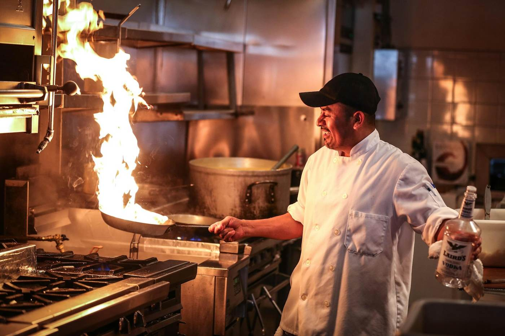
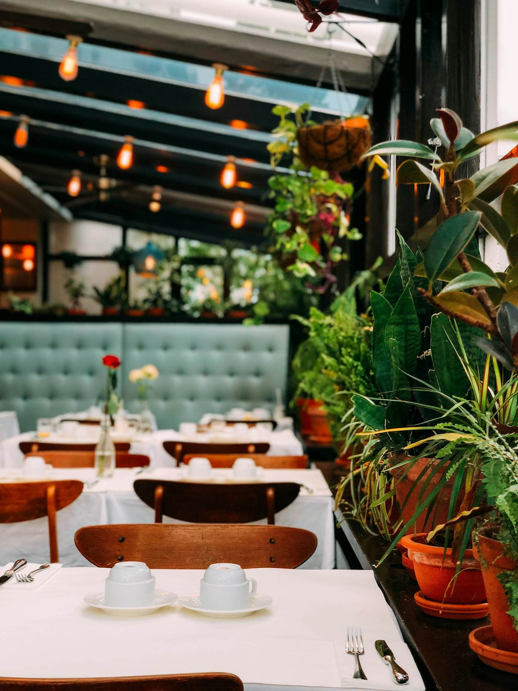

Sobre
Fogo, carne e vinho.
Uma casa dedicada à grelha.
A nossa história
A grelha no centro.
A Brasa nasceu da paixão do chef Duarte pela cozinha de fogo e pelas carnes de raças portuguesas.
Maturamos a carne na nossa câmara durante semanas e grelhamo-la em brasa de carvalho, como antigamente.
A garrafeira foi construída com visitas a produtores de norte a sul do país.
Valores
O que nos define
Origem
Carnes de raças portuguesas e produtores conhecidos.
Paciência
Maturação lenta, fogo controlado, serviço sem pressa.
Hospitalidade
Cada mesa é tratada como a única da noite.

Uma mesa só para o teu grupo.
Jantares de empresa, aniversários e provas de vinhos para até 14 pessoas, com menu à medida.
Reservar mesa